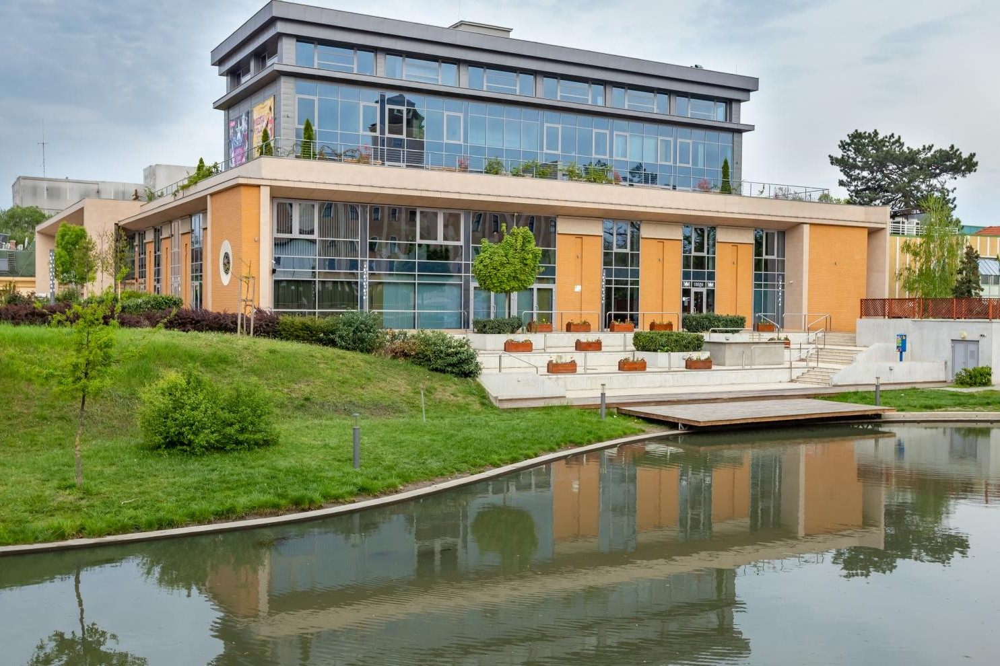
Csabagyöngye Kulturális Központ
A Csabagyöngye Kulturális Központ a megyeszékhely és a dél-alföldi régió egyik legmeghatározóbb komplex közművelődési és kulturális feladatokat ellátó intézménye. Teljes egészében akadálymentesített, termei korszerű technikával felszereltek.
További info
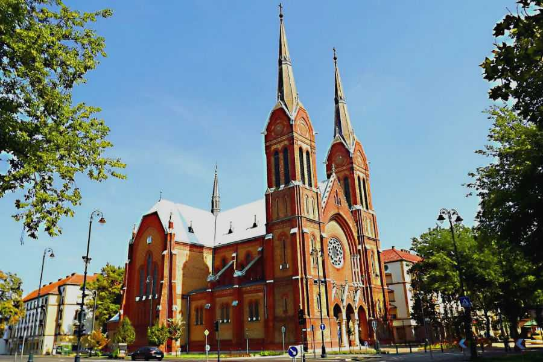
Békéscsabai Páduai Szent Antal-társszékesegyház
Ez a neogótikus stílusú templom Békéscsaba második legnagyobb temploma, amely 1910. június 12-én nyerte el szentélyét. Építése során kizárólag csabai téglát használtak, ami különlegessé teszi.
További info
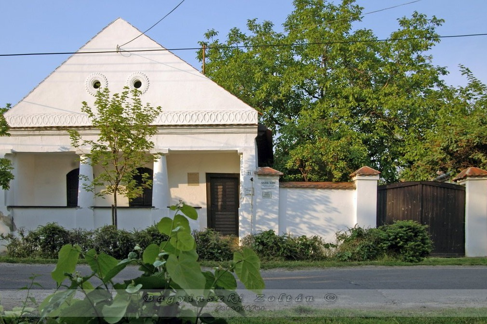
Békéscsabai Szlovák Tájház
Fedezze fel a békéscsabai Szlovák Tájház varázslatos világát, ahol egyedülálló időutazásban lehet része! Ez a 19. század elejéről származó műemléki épület betekintést nyújt Békéscsaba egykori lakóinak mindennapjaiba és a helyi szlovák kultúrába..
További info
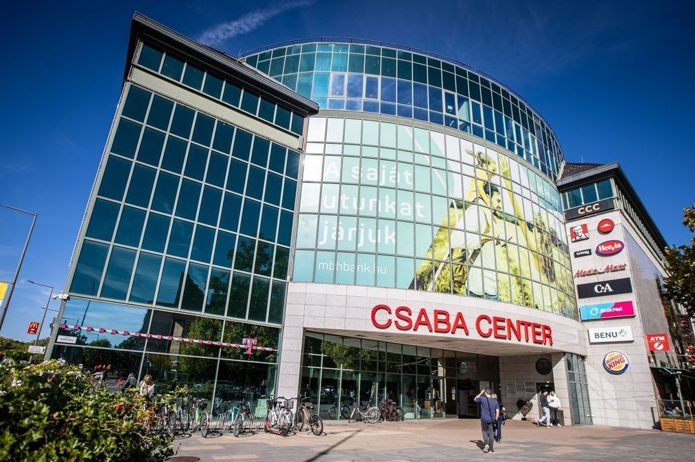
Csaba Center
A Csaba Center Békés megye legnagyobb bevásárlóközpontja, sokak találkozóhelye. A Centerben a világmárkák üzletein kívül butikok, műszaki áruház, könyvesbolt, drogéria, gyógyszertár, utazási iroda, lottózó, szupermarket és játékbolt is megtalálható. .
További info
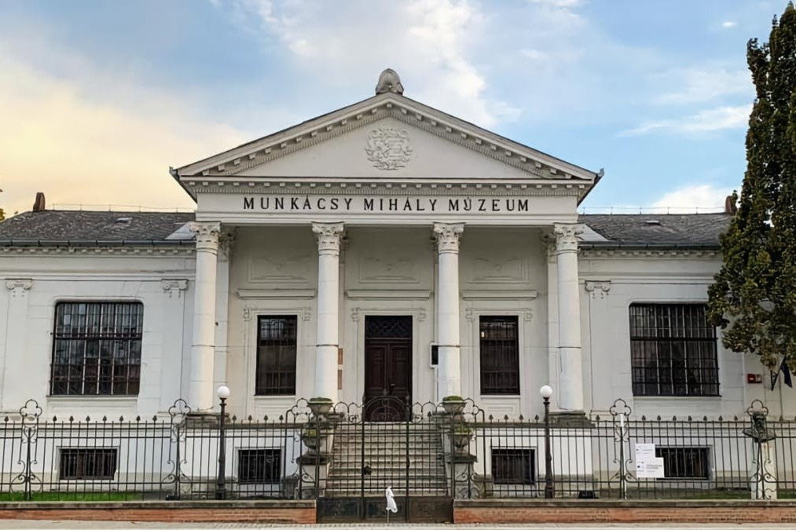
Munkács Mihály Múzeum
Munkácsy Mihály Múzeum feltárja, összegyűjti, tudományosan feldolgozza, a modern kor követelményeinek megfelelően mindenki számára közkinccsé teszi azokat a kulturális értékeket amelyek Békéscsabához, Békés megyéhez kötődnek.
További info
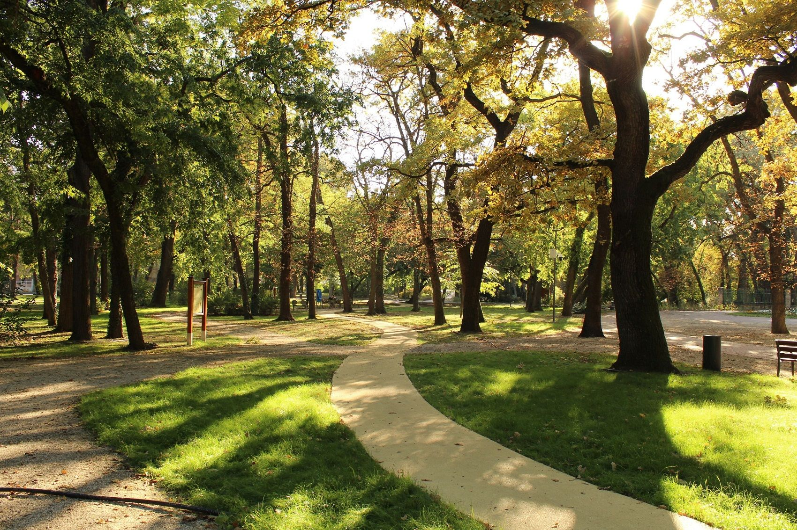
Széchenyi Liget
A Széchenyi liget bejáratát az a székelykapu jelzi, amelyet Békéscsaba testvérvárosától, Székelyudvarhelytől kapott ajándékba. Egykoron a végtelen csend birodalma, az evangélikus ó-temető része, amelybe 1776. augusztus 11-én kezdtek temetkezni.
További info
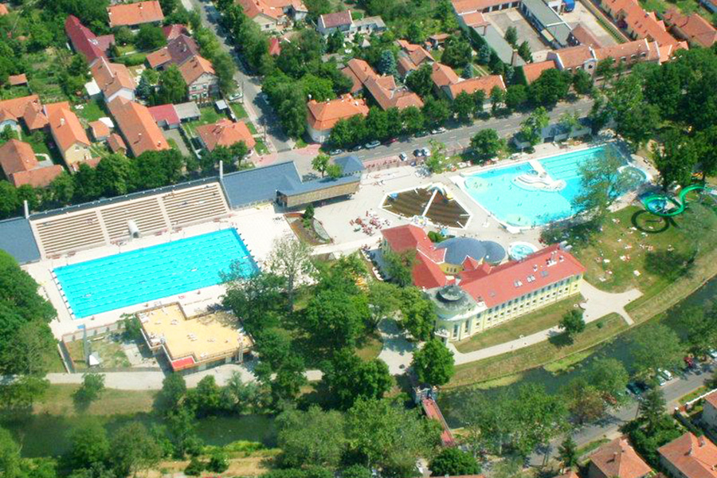
Árpád Gyógy- és Strandfürdő
Az Árpád Fürdőt Békéscsaba belvárosának közvetlen közelében találjuk az Élővíz-csatorna partján. Mindösszesen 11 medence várja a gyógyulni és felfrissülni vágyó vendégeket.
További info
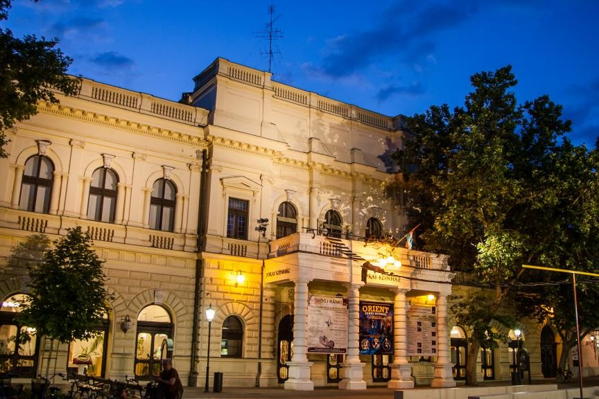
Békéscsabai Jókai Színház
A Békéscsabai Jókai Színház a helyi kulturális élet középpontja, mely napjainkban is dinamikus repertoárral várja a közönséget. A társulat felnőtteknek és gyermekeknek egyaránt kínál előadásokat, és a művészek különböző programokat szerveznek, például irodalmi esteket a Művész Kávéházban..
További info
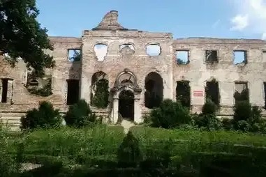
Széchenyi-Wenckheim kastélyrom
A kastélyrom a pósteleki parkerdő közepén található. Az egykoron neobarokk stílusban pompázó kastélyból ma már csak romok maradtak, de ennek ellenére érdemes mégis megcsodálni.
További info
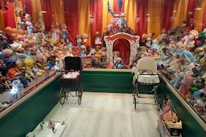
Mesés babaház
Ismerd meg a mesés Babakiállítást Békéscsabán, ahol több mint 3000 különleges baba vár rád elbűvölő környezetben! A cirkuszi sátor porondján több mint 50 bohóc szórakoztat, míg a nézőtéren rongybabák és műanyagbabák izgulnak a produkciókért.
További info
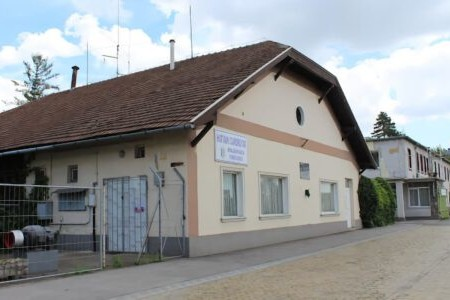
Molnárház - Békéscsaba legöregebbi lakóháza
Az 1800-as évek jellegzetességeit megőrző épület a város népi építészeti örökségének fontos része, és a Harruckern történelmi emlékút egyik állomása, ahol a látogatók a népi és középpolgári kultúra emlékeit ismerhetik meg.
További info
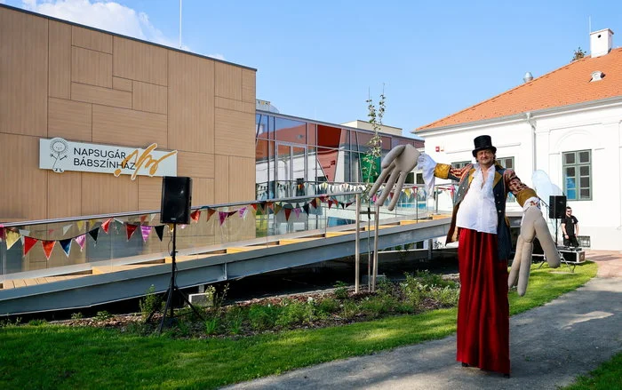
Békéscsabai Napsugár Bábszínház
A bábjáték hagyományainak tisztelete és népszerűsítése mellett olyan innovatív programokat kínál, melyek több korosztály számára is magas minőségű kulturális élményt és a közösségi kikapcsolódás lehetőségét kínálják.
További info